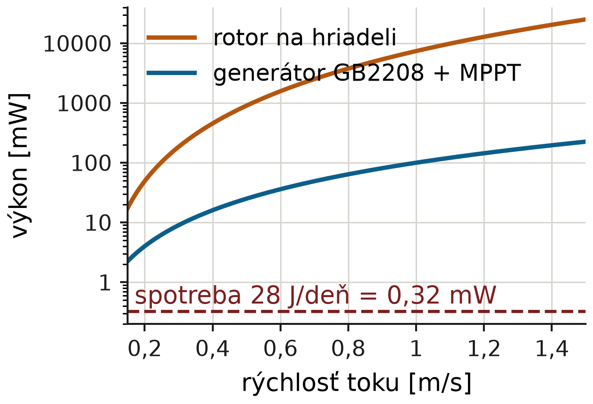
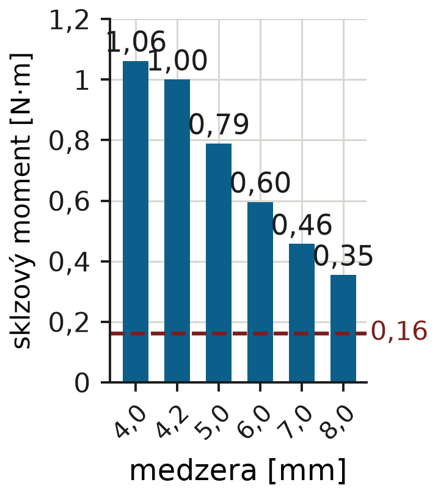
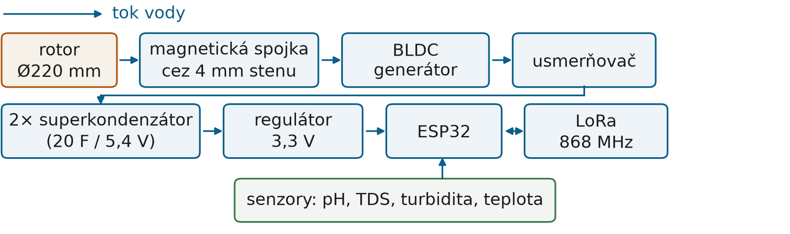

Festival vedy a techniky AMAVET 2026 · Robotika a inteligentné strojeceloštátne kolo · Bratislava, 16.–17. 11. 2026
Sub-Mission
Filip Vizváry, Šimon FilusGymnázium Milana Rúfusa, Žiar nad Hronom
Vedecká otázka / Ciele
Výskumná otázka:Dokáže energia prúdiacej vody pokryť spotrebu sondy na sledovanie kvality vody bez externého napájania a bez výmeny batérií?
Problém: Havária na Hrone v roku 2021 (500 m³ digestátu, 37 km toku, 27 t rýb) ukázala, že štátna sieť vzorkuje vodu len raz za mesiac a zmenu kvality zachytí neskoro.
Cieľ: Navrhnúť sondu, ktorá meria pH, TDS, turbiditu a teplotu vody, prenáša dáta rádiom a energiu na svoju činnosť získava z prúdiacej vody.
Režim a kritériá:96 meracích cyklov denne (každých 15 minút); aspoň 10-násobná energetická rezerva a viac ako 2,5-násobná rezerva momentu magnetickej spojky.
Dáta a výsledky

Výpočet (BEM model rotora + MPPT): výkon na hriadeli a z generátora proti rýchlosti toku. Spotreba 0,32 mW je o 2–3 rády nižšia.

Výpočet (magnetostatický model): sklzový moment spojky proti vzduchovej medzere, proti záťaži rotora 0,16 N·m.
Metodológia / Návrh projektu
Bez otvoru pre hriadeľ: krútiaci moment prenáša magnetická spojka (8 × N52 Ø10×5) cez pevnú 4 mm stenu podu.
Dáta prenáša ESP32 cez LoRa 868 MHz na desiatky až stovky metrov bez výkonných antén.

Schéma: mechanická časť, ukladanie energie a rádiový prenos.
Interpretácia a závery
Sonda dosiahne sebestačnosť: pri 0,5 m/s dáva 25 mW (2 156 J/deň) proti 28 J/deň spotreby, teda 77-násobnú rezervu.
Superkondenzátory uchovajú 134 J využiteľnej energie, čo je 4,8 dňa bez toku.
Magnetická spojka má pri 4–5 mm stene rezervu 4,9–6,5×, takže pod je utesnený bez pohyblivého tesnenia.
Obmedzenia: prototyp napájame z USB a generátor dosku zatiaľ nenapája; v rieke sme nemerali; dosah LoRa len v interiéri; moment zubov nemeraný, rýchlosť rozbehu neznáma; pH je servisná veličina (14–30 dní).
Ďalej: spojíť harvester s doskou, otestovať sondu v teréne a kalibrovať pH.